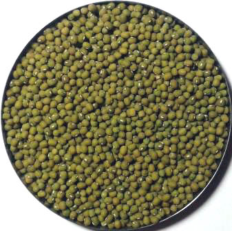
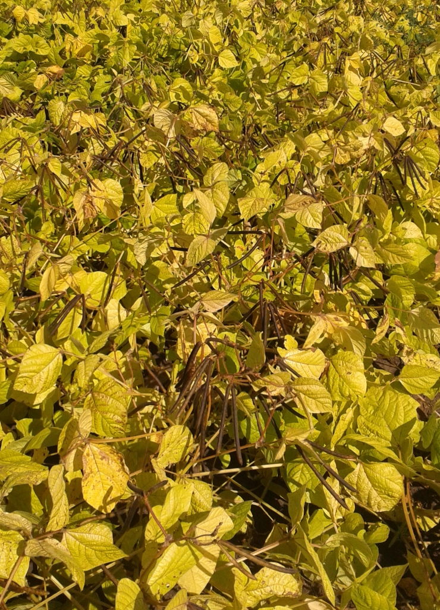

|
|
Квітки голубиного гороху є досить привабливими для бджіл та інших комах. Тому незважаючи на те, що каянус як і інші бобові самозапильна рослина, проте перехресне запилення тут трапляється дуже часто до 40 %. Зважаючи на таку його особливість каянус є поки що єдиною зернобобовою культурою у якої вдалося створити гібридні сорти. Мед з каянусу має зеленуватий відтінок і схожий на акацієвий. Зважаючи на те що цвітіння каянусу проходить в другій половині липня на початку серпня, коли більшість сояшнику уже відцвіла існує значна перспектива його використання для подовження періоду медозбору, особливо в південних областях України
|
|||||||||||||||||||||||||||||||||||||||||||||||||||||||||||||||||||||||||||||||||||


Зразок ID |
Урожай-ність ц/га |
Маса насіння з однієї рослини, г |
Висота рослин, см |
Mаса 1000 насінин, г |
Дата цвітіння |
Вегетаційний період, діб |
|
max |
min |
||||||
14924 |
27.5 |
30 |
12 |
90 |
85 |
16.07 |
123 |
14407 |
24,6 |
27,5 |
12,5 |
85 |
102 |
12.07 |
108 |
14394 |
23,9 |
23,5 |
8 |
80 |
90 |
11.07 |
108 |
14921 |
23,4 |
37 |
7,5 |
168 |
89 |
20.07 |
129 |
14895 |
23,1 |
37 |
7,5 |
80 |
103 |
16.07 |
116 |
14416 |
21,9 |
45,5 |
3 |
100 |
94 |
12.07 |
116 |
14923 |
21,3 |
21 |
12 |
90 |
83 |
15.07 |
109 |
Сівба Маш можна сіяти різними способами, залежно від наявних технічних можливостей та планованої технології вирощування.
За звичай маш сіють широкорядним способом із шириною міжрядь 45-70 см. До переваг цього методу належать:
- широкорядні сівалки як правило висівають точніше тому в результаті вдається сформувати більш рівномірний посів, що в результаті сприятиме більш дружньому дозріванню;
- рослини при такому посіві ростуть крупніші і їх легше збирати;
- економити кошти за рахунок стрічкового внесення фунгіцидів, інсектицидів та десикантів;
- за посушливих умов в широкорядних посівах рослини краще забезпечуються вологою;
- проводити боротьбу з бур’янами шляхом проведення міжрядних культивацій.
Сіяти маш можна і вузькорядним способом, з шириною міжрядь 15-30 см. При такому способі сівби:
- рослини швидше покривають землю і краще конкурують з бурянами;
- фіксація атмосферного азоту проходить ефективніше на 15-30 %;
- потенційна врожайність значно зростає і можна отримати більш високий урожай до 2 т/га.
Проте, слід мати на увазі, що маш розвивається дуже повільно на початку росту і слабо конкурує з бур’янами, а проти дводольних страхових гербіцидів для застосування на маші не має.
Норма висіву. Кінцева густота стояння 26-30 рослин на квадратний метр на богарі, і 35-40 рослин на квадратний метр при зрошенні. Якщо після сходів густота стояння менша ніж 10 рослин на квадратний, метр потрібно проводити пересів. Збільшення норми висіву може збільшити ризик появи грибних хвороб, таких як склеротиніоз, що розвиваються в умовах підвищеної вологості, та бути причиною полягання рослин. Вагова норма висіву залежить від схожості насіння та його крупності. В середньому вона становить 30 кг на гектар.
Насіння машу чутливе до механічного пошкодження. В результаті механічних пошкоджень воно або повністю втрачає схожість, або втрачає здатність для подальшого нормального росту і розвитку. В такому випадку рослини сходять, виносячи сім’ядолі на поверхню ґрунту, а далі не розвиваються. Особливо часто це трапляється при пониженій вологості насіння менше 14%. В такому випадку буває доцільно провести ряд заходів для підвищення вологості насіння.
Для зменшення ризику захворювання рослин насіння обробляють протруйниками.
Сівбу машу, як правило, здійснюють коли ґрунт прогріється до 12°C і можливість заморозків є мінімальною, тому що його сходи дуже чутливі до холоду і навіть мінімальний заморозок може повністю знищити посіви. Рекомендована глибина загортання насіння машу 4-5 см. Насіння машу дрібніше в порівнянні з квасолевим і абсорбує менше вологи з ґрунту для проростання. Але для нормальних сходів ця волога повинна бути наявна в ґрунті. При неглибокому загортанні насіння зростає ризик засихання сходів, тоді як при глибокій сівбі сходи ослаблені і зростає ризик ураження сходів патогенними грибами, що знаходяться в ґрунті.
Під час сівби потрібно контролювати щоб посівне обладнання доставляло насіння рівномірно і підтримувалася задана глибина заробки. Часта проблема у новачків при вирощуванні машу - просіви в рядках, за якими слідують загущені ділянки, які виникають в результаті неоднорідного висіву. В результаті, на пропусках розвиваються бур’яни, а в загущених ділянках створюються сприятливі умови для розвитку грибних хвороб.
Посівний матеріал. Високі закупівельні ціни на маш сприяли зростанню зацікавленості сільгоспвиробників цією культурою. Для посівів вони здебільшого використовують насіннєвий матеріал походженням з Узбекістану і Таджикістану. Але зважаючи на те, що ці країни розташовані значно півдненніше від нас, дані сорти не достатньо пристосовані до вирощування на основній частині території України, хіба що для Криму та для самих південних регіонів материкової частини. На основній же частині Степової і Лісостепової зони вони добре себе показують лише в жаркі роки. В прохолодні ж роки вони пізно зацвітають, у них сильно подовжується період вегетації, спостерігається абортивність квіток, погана виповненість бобів. Та навіть за високої середньодобової температури, але при прохолодних ночах, початок цвітіння у них значно затримується, а відповідно і сильно подовжується вегетаційний період. Для створення сорту пристосованого до наших кліматичних умов, було вивчено в умовах північного Степу понад 500 зразків машу, різного екологічного походження. В результаті проведених досліджень було створено сорт, який максимально пристосований до вирощування в кліматичних умовах України. Навіть у прохолодні і вологі роки вегетаційний період його не перевищував 90 днів. Дозрівання наставало в другій половині серпня, а виповненість бобів становила 80-90 %. Даний сорт під назвою Заратустра, передається до реєстрації в Український інститут експертизи сортів рослин, і буде зареєстрований для вирощування в Степовій і Лісостеповій зонах України.
 |
Сорт машу Заратустра має вегетаційний період 85-90 діб, насіння крупне, маса 1000 насінин 59 г, насіннєва оболонка зелена, атласна. Середня урожайність за роки досліджень становила 1,3 т/га. |
Догляд за посівами. Захист від бур’янів. Після сівби посіви прикочують з метою вирівнювання поля та покращення контакту насіння з ґрунтом. Коткування потрібно проводити відразу після сівби, або не пізніше як через 3 дні після сівби. Не можна проводити прикочування після проростання насіння або появи сходів. Ґрунтову кірку на посівах машу руйнують легкими боронами. Боронують посіви по діагоналі через 3-4 дні після сівби. Наступний догляд полягає в розпушуванні міжрядь і знищенні бур’янів. Перший обробіток міжрядь проводять через 5-7 днів після появи сходів, а наступні — залежно від стану забур’яненості й ущільнення ґрунту.
Маш розвивається досить повільно і не покриває грунт до кінця червня. Він слабо конкурує з бур’янами, тому його потрібно вирощувати на полях з низькою забур’яненістю. Боротьбу з багаторічними бур’янами, такими як осот та гірчак, потрібно проводити в попередні роки. Маш, сіють у другій половині весни, тому є час для внесення деяких гербіцидів суцільної дії для знищення ранніх та багаторічних бур’янів ще до сходів культури. Маш чутливий до залишків у ґрунті багатьох гербіцидів, які використовуються для боротьби з широколистими бур’янами, виключенням є Раундап, Реглон.
Досить ефективні такі досходові ґрунтові гербіциди, як дуал голд, гезагард. Ними обробляють посіви машу через 3-4 дні після сівби. По сходах машу можна застосовувати лише протизлакові гербіци: фюзілад, таргу та ін. Посіви обробляють, коли однорічні бур’яни знаходяться в фазі 2-4 листків, а багаторічні досягнуть висоти 10-12 см. Як уже згадувалося вище, проти дводольних страхових гербіцидів для застосування на маші не має.
Перед збиранням, для контролю багаторічних бурянів, можна застосовувати гліфосат. Обробку можна проводити коли насіння досягне вологості 30 %, стебло починає жовтіти, боби достигли, а 80-90 % листків вже опало. Проте на насіннєвих посівах застосування гліфосату небажане так як в результаті може зменшитися схожість насіння. На насіннєвих посівах краще застосовувати Реглон.
Захист від хвороб. На посівах машу найбільш шкодочинні в умовах України антракноз, церкоспороз, бактеріози, кореневі гнилі, звичайна і жовта вірусна мозаїки.
Антракноз — грибне захворювання. Гриб пошкоджує надземні органи протягом усієї вегетації. Ознаки хвороби проявляються на сходах, сім’ядолях. Хвороба може призводити до загибелі сходів. Спори гриба пошкоджують також стебла, боби і навіть насіння. Хвороба передається через насіння, ґрунт, післяжнивні рештки. Заходи боротьби — вирощування сортів стійких до хвороб, здорове насіння, правильне чергування в сівозміні, протруювання насіння препаратом Вінцит 050, к.с. -2,0 л/т, при виявленні хвороби обробка вегетуючих рослин: Імпакт К, к.с. - 0,6-0,8 л/га, дворазове обприскування посівів у період вегетації 1%-ю бордоською рідиною (перший раз по сходах, другий — при утворенні бобів).
Церкоспороз. Джерелом інфекції є заражені рослинні рештки і насіння машу та сої. Прояви хвороби - на листі і бобах плями світло-сірі з чітко вираженим обідком, темно-сірий наліт спороношення виступає з нижньої сторони плям. На стеблах плями фіолетово-червоні, витягнуті, з коричневим обідком, з нечисленним спороношенням. На насінні два види плям: одні - неправильно-округлі, опуклі або поверхневі з різким коричневим обідком, інші - опуклі, темно-коричневі без обідка з розпливчастими краями. Інкубаційний період розвитку церкоспорозу влітку становить 10-14 днів, весною і восени - 17-21 день. Найбільш інтенсивне зараження з рясним спороношенням відбувається при 20-30оС і відносній вологості 90-100%. При температурі повітря 5-10 і вище 30°С і відносної вологості нижче 80% захворювання розвивається дуже слабо. Захворювання може знижувати врожайність культури в 3-8 разів; знижуються посівні та якісні властивості насіння. Заходи боротьби — вирощування сортів стійких до хвороб, здорове насіння, правильне чергування в сівозміні, протруювання насіння препаратом Вінцит 050, к.с. -2,0 л/т, при виявленні хвороби обробка вегетуючих рослин: Імпакт К, к.с. - 0,6-0,8 л/га.
Бактеріози пошкоджують листки, стебла і боби, знижують врожайність до 40-50%, погіршують товарну якість насіння, яке стає щуплим, недорозвинутим. Заходи боротьби — вирощування сортів стійких до хвороб, використовувати здорове насіння, дотримуватися чергування культур в сівозміні. Проти хвороби можна, обприскувати рослини 1%-ю бордоською рідиною, проте це може бути не достатньо ефективним.
Кореневі гнилі викликаються комплексом збудників таких як Fusarium, Rhizoctonia та Pythium. Всі ці патогени присутні в грунтах України, вони можуть пошкоджувати і спричиняти загибель рослин на протязі всього вегетаційного періоду. Пошкодження, як правило, спочатку розвивається внизу стебла, викликаючи знебарвлення і укорочення стебла, згодом рослина жовтіє і в’яне. В більшості випадків заражаються лише окремі рослини. Проте ці хвороби можуть викликати відчутні втрати врожаю. Від фузаріозу рослини більше страдають у посушливі роки, уражені рослини затримуються в рості жовтіють, дають менше бобів і дрібе насіння. Найкращий спосіб контролю цих хвороб: дотримання сівозміни, в якій маш чи близькі до нього бобові (квасоля, соя) повертається на таж поле не частіше, ніж раз у чотири роки. Використання здорового і повноцінного насіння знижує ризик розвитку кореневих гнилей. Також зареєстровано ряд фунгіцидів протруйників для обробітку насіння.
Звичайна і жовта мозаїки — вірусні хвороби. Ознаками захворювання є скручування і деформація листків, карликовість рослин, плями на листках. На стеблах та бобах симптоми хвороби відсутні. Поширюються вірусні хвороби попелицями, тому потрібно боротися з переносниками вірусів. Важливе значення має просторова ізоляція з іншими бобовими культурами.
Захист рослин від шкідників. В умовах України маш пошкоджує незначна кількість шкідників. На відміну від квасолі маш охоче поїдають гризуни (миші, пацюки). У період сходів маш може пошкоджуватися ростковою мухою, під час вегетації — бобовою попелицею. Квасолевий зерноїд маш не пошкоджує, специфічний для цієї культури зерноїд поки що не завезений. Росткова муха з’являється весною при середньодобовій температурі вище 10-12°С. Зимує в стадії личинки у верхній частині орного шару на посівах овочевих, зернових, конюшини. Весною дорослі мухи відкладають яйця під грудочки ґрунту, переважно там, де погано приораний гній. Личинки, що з’являються через 5-10 днів, пошкоджують насіння і сходи машу. Заходи боротьби — сівба в оптимальні строки, ретельне приорювання гною, протруювання насіння.
Попелиці висмоктують сік із листків, квіток, плодів і стебел машу. Крім того, вони є основними розповсюдникоми вірусних хвороб. Для знищення попелиць застосовують ті ж самі препарати, що й на посівах гороху.
Зерноїд — небезпечний польовий і комірний шкідник. Самки дорослих жуків відкладають яйця в тріщини бобів у період дозрівання. Личинки з’являються через тиждень і пошкоджують насіння. У зерносховищах, де є маш, самка відкладає на зерно, мішки, стіни до 80 яєць, личинки з яких проникають у середину насіння, де ростуть, проходять стадію лялечки і перетворюються в жуків. При температурі 25-28°С жуки із місця зимівлі перелітають на поля й відкладають яйця на боби. Зерноїд гине при мінус 10°С протягом 12 год., а при мінус 12-18°С, незалежно від стадії розвитку, протягом 2-3 год. Це потрібно враховувати у процесі зберігання насіння. В польових умовах посіви обробляють інсектицидами, перший раз — на початку цвітіння, другий — через 8-10 днів, у сховищах проводять фумігацію насіння.
Збирання врожаю. Адаптовані до наших умов сорти досягають стиглості через 80-90 діб після появи сходів. Орієнтовно це припадає на другу половину серпня. Рослини машу характеризуються індетермінантним типом росту і, за сприятливих погодних умов, при достатній кількості вологи в ґрунті, боби в нижніх ярусах можуть бути уже стиглими, а на верхніх ярусах продовжуватиметься цвітіння і зав’язування бобів. За таких умов подальший ріст і розвиток рослин припиняють шляхом скошування, або хімічною десикацією. Скошування, чи десикацію проводять при дозріванні 80-90 % бобів на рослині. Якщо це зробити раніше, то багато насіння не наллється, буде щуплим. При затримці зі скошуванням або десикацією можливі значні втрати за рахунок розтріскування і висипання насіння з бобів на нижніх ярусах. Як скошування, так і хімічна десикація мають свої певні переваги. Так, за оптимальних погодних умов скошування дає можливість отримати насіння більш високої якості, тому що у валках воно менше піддається дії сонячних променів і зберігає рівномірний зелений колір. Проте, за несприятливих погодних умов внаслідок дощів можуть бути значні втрати через довше висихання рослин у валках, проростання насіння, яке лежить ближче до землі, обсипання, зараження насіння грибними хворобами, особливо сапрофітними. Застосування хімічної десикації дозволяє швидше висушити рослини, зменшити втрати за рахунок розтріскування бобів під час дощів. Посіви, на яких була застосована хімічна десикація, просихають скоріше після дощу, на них спостерігається менше розповсюдження хвороб.
 |
Як хімічні десиканти можна застосовувати Реглон (дикват), а також Гліфосат. Але останній знижує репродуктивні властивості насіння, тому його небажано застосовувати на насіннєвих посівах. Крім того, в деяких країнах, існують жорсткі обмеження щодо мінімально допустимого вмісту в насінні остатків Гліфосату. Після проведення скошування або хімічної десикації маш висихає і стає готовоим до обмолоту на протязі 4-7 діб, залежно від погодних умов та стану посівів. Обмолот потрібно розпочинати, коли насіння досягло вологості 14-16 %, тому, що при пересиханні відбуваються значні втрати внаслідок його пошкодження при обмолоті та за рахунок розтріскування бобів. Скошування не бажано проводити в жаркі години дня, тому що втрати врожаю при цьому сильно зростають. Збирання можна проводити звичайними зернозбиральними комбайнами, але при обмолоті насіння легко розбивається, тому потрібно зменшити швидкість обертання барабана до 300-400 об./хв. (в залежності від діаметру барабана), опустити підбарабанник і, якщо можливо, замінити стальні била на дерев’яні або гумові. Для зменшення травмування насіння також можна проводити збирання при вологості 18 %, проте потім його потрібно буде додатково досушувати. відразу після обмолоту зерно очищають і сортують, досушують до вологості 13 %. З насінням потрібно поводитися дуже обережно не допускати його падіння з висоти на тверду поверхню. Також при доробці краще використовувати стрічкові конвеєри, ніж металічні шнеки, для запобігання травмування насіння. Зберігають його у добре вентильованих приміщеннях на дерев’яній підлозі шаром не більше 1-1,2 м. При зберіганні в мішках їх штабелюють на дощатих стелажах завширшки у 2-3 мішки і заввишки не більше шести рядів.
Сайт постійно корегується (дякуємо за ваші листи з поміченими помилками) надсилайте, будь-ласка ваші зауваження на адресу ookulinich@mail.ru
| Copyright © 2012 Кулініч О.О. | [ Головна ][ Про автора ][ Контакти ][ Продукція ][ Трейдери ] |